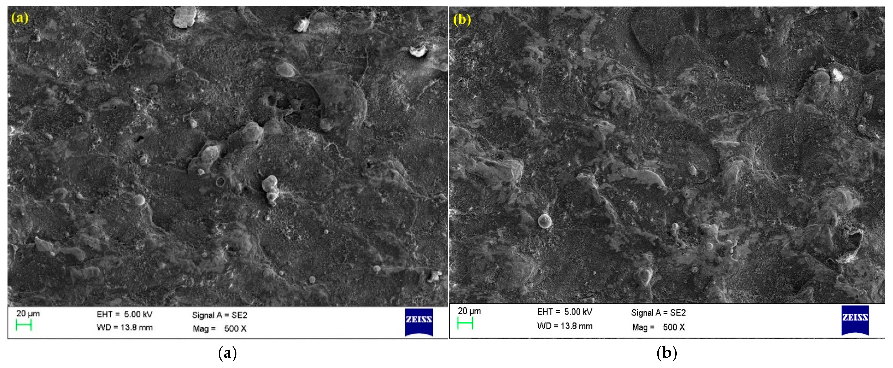

Published in: Journal of Manufacturing and Materials Processing
DOI: 10.3390/jmmp060131
Project Overview
This study focuses on optimizing machining for Nitinol SMA using near-dry WEDM. I conducted the experiments and contributed to writing the paper. The Taguchi-based GRA method was employed to analyze performance metrics, such as material removal rate, surface roughness, and recast layer thickness. The optimized conditions showed significant improvements in machining performance, making it valuable for precision industries.
Key Contributions
- Conducted experimental trials with various WEDM parameters.
- Applied the Taguchi-based GRA optimization technique.
- Improved MRR by 20%, reduced surface roughness by 15%, and minimized recast layer thickness.
- Developed findings critical for high-precision applications, especially in medical device manufacturing.
Figure 1: Experimental Setup
Description: The setup used for near-dry wire EDM, showcasing the key components of the experiment.
Figure 3: Surface Roughness Analysis
Figure 4: Material Removal Rate (MRR) Analysis

Figure 5: Recast Layer Thickness Analysis
Figure 6: Optimization Results
Description: The final optimization results showing improved machining performance across all key metrics.